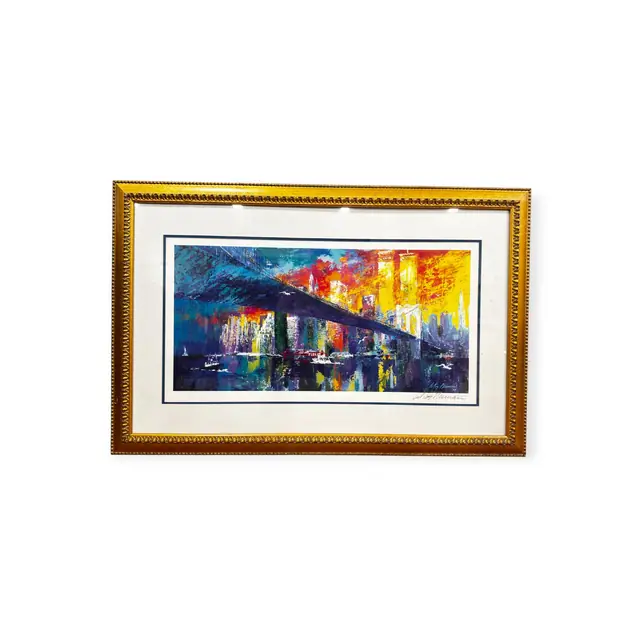
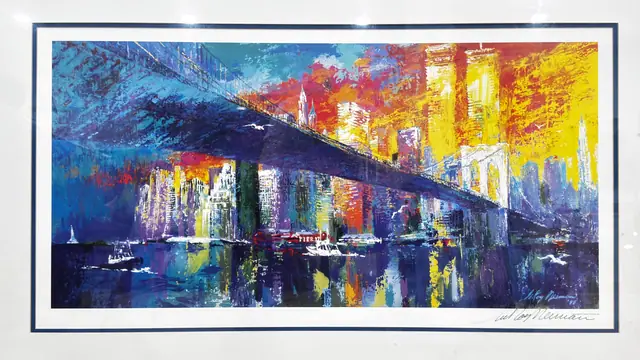

Paintings & Prints
LeRoy Neiman Brooklyn Bridge Cityscape Print, Signed, Framed, 1974
LeRoy Neiman · image dated 1974, print later
Price Upon Request


About the Item
LeRoy Neiman. A long panoramic cityscape: the dark blue sweep of the Brooklyn Bridge cuts diagonally across a skyline slashed in cadmium yellow, scarlet, magenta and violet, its towers rising into a turquoise sky. Below, the river is worked in broad palette-knife strokes of purple, teal and yellow with small white sailboats and tugs and their broken reflections. The handling is loose and impasto-like in the original, reproduced flat with dense expressive strokes; signed and dated in the image and again in a large signature on the margin below. Medium: colour offset lithograph on paper. Signed in the image lower right, and a large signature on the paper margin below the image, reading "LeRoy Neiman 74". Inscribed on the reverse or mount: LeRoy Neiman 74; LeRoy Neiman; Copyright(c) LeRoy Neiman, Inc.. Condition: Colours strong, paper clean, mat crisp. Reflections from the glazing across the image. Frame in good condition with light rubbing.
Details
- Creator:
- LeRoy Neiman
- Creation Year:
- image dated 1974, print later
- Dimensions:
- Height: 28.5 in (72.39 cm)
Width: 43.0 in (109.22 cm)
outside of frame - Medium:
- colour offset lithograph on paper
- Period:
- 20Th
- Condition:
- Offered in the condition shown in the photographs.
- Reference Number:
- VO-257
- Documentation:
- no certificate photographed
- Gallery Location:
- LeRoy Neiman 74; LeRoy Neiman; Copyright(c) LeRoy Neiman, Inc.